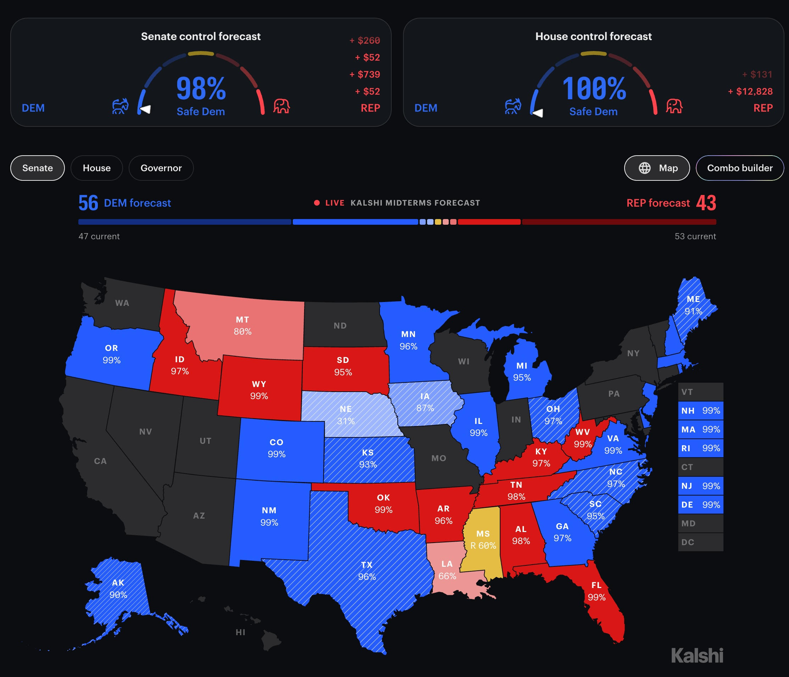

84 · 5 · 17 분 전 · 원문

아니 텍사스에서 민주당이??????
파랭이 스타트일때 그래도 바뀔줄알았는데???
수집 당시 댓글 5개
메리망 · 3 분 전
게임 끝났네 ㅋㅋㅋ
세계는게이가지배한다 · 3 분 전
쥐드립넷 · 3 분 전
미치겟다 진짜 트럼프는 레전드 오브 레전드 병신이다
지금이안좋다 · 2 분 전
올 블루라고 본적있어?
보리차온더락 · 방금 전
일단 가짜뉴스라고 우기다가 진짜면 부정선거라고 하면서 계엄때릴거


게임 끝났네 ㅋㅋㅋ